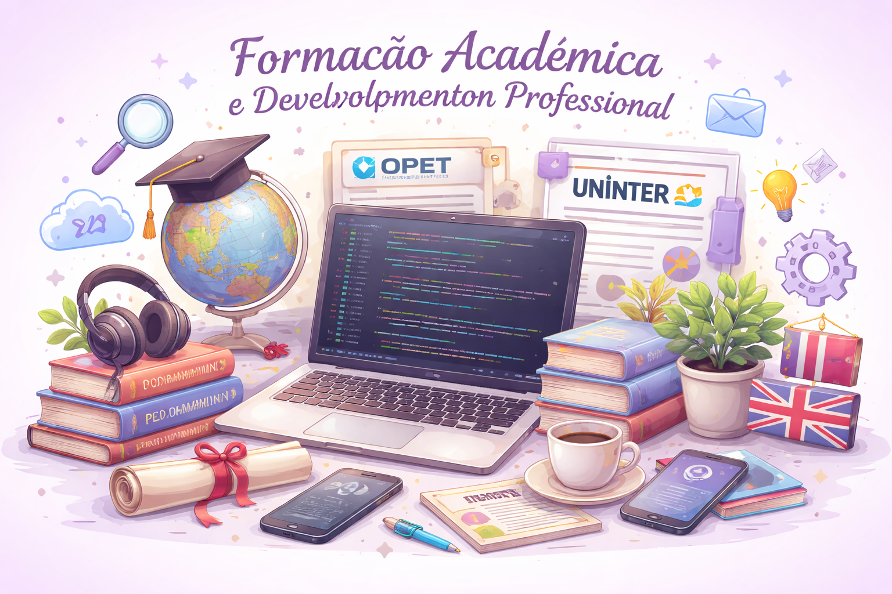

Minha formação acadêmica é voltada para a área de tecnologia da informação. Concluí o curso técnico em Informática para Internet pela instituição OPET, onde tive a oportunidade de desenvolver conhecimentos fundamentais relacionados ao uso de tecnologias, ferramentas digitais e conceitos importantes da área de informática.
Atualmente estou cursando Análise e Desenvolvimento de Sistemas no Grupo Uninter, com o objetivo de aprofundar meus conhecimentos na área de tecnologia, desenvolvimento de sistemas e soluções digitais. Durante a graduação, busco desenvolver habilidades técnicas e ampliar minha capacidade de análise, resolução de problemas e pensamento lógico, competências essenciais para o mercado de tecnologia.
Além da formação acadêmica, também busco investir no aprendizado de novos idiomas. Atualmente estudo inglês, reconhecendo a importância da língua para o desenvolvimento profissional, principalmente na área de tecnologia, que possui grande presença de conteúdos e ferramentas em inglês.
Acredito que a combinação entre formação acadêmica, experiência profissional e aprendizado contínuo contribui para o desenvolvimento de uma carreira sólida e para a busca constante por novas oportunidades de crescimento.

Imagem gerada com IA para fins ilustrativos